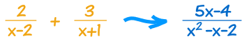
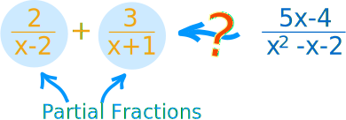
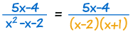
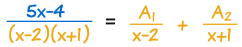
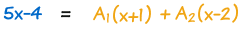
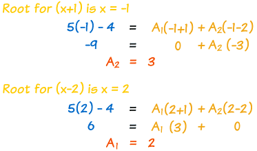
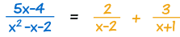
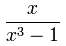
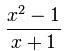

Partial Fractions
A way of "breaking apart" fractions with polynomials in them.
What are Partial Fractions?
We can do this directly:

Like this:
2 x−2 + 3 x+1 = 2(x+1) + 3(x−2) (x−2)(x + 1)
Which can be simplified using Rational Expressions to:
= 2x+2 + 3x−6 x2+x−2x−2
= 5x−4 x2−x−2
... but how do we go in the opposite direction?

That is what we are going to discover:
How to find the "parts" that make the single fraction
(the "partial fractions").
Why Do We Want Them?
First of all ... why do we want them?
Because the partial fractions are each simpler.
This can help solve the more complicated fraction. For example it is very useful in Integral Calculus.
Partial Fraction Decomposition
So let me show you how to do it.
The method is called "Partial Fraction Decomposition", and goes like this:
Step 1: Factor the bottom

Step 2: Write one partial fraction for each of those factors

Step 3: Multiply through by the bottom so we no longer have fractions

Step 4: Now find the constants A1 and A2
Substituting the roots, or "zeros", of (x−2)(x+1) can help:

And we have our answer:

That was easy! ... almost too easy ...
... because it can be a lot harder!
Now we go into detail on each step.
Proper Rational Expressions
Firstly, this only works for Proper Rational Expressions, where the degree of the top is less than the bottom.
The degree is the largest exponent the variable has.
- Proper: the degree of the top is less than the degree of the bottom.
Proper:  degree of top is 1
degree of bottom is 3 - Improper: the degree of the top is greater than, or equal to, the degree of the bottom.
Improper:  degree of top is 2
degree of bottom is 1
If your expression is Improper, then do polynomial long division first.
Factoring the Bottom
It is up to you to factor the bottom polynomial. See Factoring in Algebra.
But don't factor them into complex numbers ... you may need to stop some factors at quadratic (called irreducible quadratics because any further factoring leads to complex numbers):
Example: (x2−4)(x2+4)
- x2−4 can be factored into (x−2)(x+2)
- But x2+4 factors into complex numbers, so don't do it
So the best we can do is:
(x−2)(x+2)(x2+4)
So the factors could be a combination of
- linear factors
- irreducible quadratic factors
When you have a quadratic factor you need to include this partial fraction:
B1x + C1(Your Quadratic)
Factors with Exponents
Sometimes you may get a factor with an exponent, like (x−2)3 ...
You need a partial fraction for each exponent from 1 up.
Like this:
Example:
1(x−2)3
Has partial fractions
A1x−2 + A2(x−2)2 + A3 (x−2)3
The same thing can also happen to quadratics:
Example:
1(x2+2x+3)2
Has partial fractions:
B1x + C1x2+2x+3 + B2x + C2(x2+2x+3)2
Sometimes Using Roots Does Not Solve It
Even after using the roots (zeros) of the bottom you can end up with unknown constants.
So the next thing to do is:
Gather all powers of x together and then solve it as a system of linear equations.
Oh my gosh! That is a lot to handle! So, on with an example to help you understand:
A Big Example Bringing It All Together
Here is a nice big example for you!
x2+15(x+3)2 (x2+3)
- Because (x+3)2 has an exponent of 2, it needs two terms (A1 and A2).
- And (x2+3) is a quadratic, so it will need Bx + C:
x2+15(x+3)2(x2+3) = A1x+3 + A2(x+3)2 + Bx + Cx2+3
Now multiply through by (x+3)2(x2+3):
x2+15 = (x+3)(x2+3)A1 + (x2+3)A2 + (x+3)2(Bx + C)
There is a zero at x = −3 (because x+3=0), so let us try that:
(−3)2+15 = 0 + ((−3)2+3)A2 + 0
And simplify it to:
24 = 12A2
so A2=2
Let us replace A2 with 2:
x2+15 = (x+3)(x2+3)A1 + 2x2+6 + (x+3)2(Bx + C)
Now expand the whole thing:
x2+15 = (x3+3x+3x2+9)A1 + 2x2+6 + (x3+6x2+9x)B + (x2+6x+9)C
Gather powers of x together:
x2+15 = x3(A1+B)+x2(3A1+6B+C+2)+x(3A1+9B+6C)+(9A1+6+9C)
Separate the powers and write as a Systems of Linear Equations:
| x3: | 0 | = | A1+B | |
| x2: | 1 | = | 3A1+6B+C+2 | |
| x: | 0 | = | 3A1+9B+6C | |
| Constants: | 15 | = | 9A1+6+9C |
Simplify, and arrange neatly:
| 0 | = | A1 | + | B | ||
| −1 | = | 3A1 | + | 6B | + | C |
| 0 | = | 3A1 | + | 9B | + | 6C |
| 1 | = | A1 | + | C |
Now solve.
You can choose your own way to solve this ... I decided to subtract the 4th equation from the 2nd to begin with:
| 0 | = | A1 | + | B | ||
| −2 | = | 2A1 | + | 6B | ||
| 0 | = | 3A1 | + | 9B | + | 6C |
| 1 | = | A1 | + | C |
Then subtract 2 times the 1st equation from the 2nd:
| 0 | = | A1 | + | B | ||
| −2 | = | 4B | ||||
| 0 | = | 3A1 | + | 9B | + | 6C |
| 1 | = | A1 | + | C |
Now I know that B = −(1/2).
We are getting somewhere!
And from the 1st equation I can figure that A1 = +(1/2).
And from the 4th equation I can figure that C = +(1/2).
Final Result:
| A1=1/2 | A2=2 | B=−(1/2) | C=1/2 |
And we can now write our partial fractions:
x2+15 (x+3)2(x2+3) = 1 2(x+3) + 2 (x+3)2 + −x + 1 2(x2+3)
Phew! Lots of work. But it can be done.
(Side note: It took me nearly
an hour to do this, because
I had to
fix
2 silly mistakes along the way!)
Summary
- Start with a Proper Rational Expressions (if not, do division first)
- Factor the bottom into:
- linear factors
- or "irreducible" quadratic factors
- Write out a partial fraction for each factor (and every exponent of each)
- Multiply the whole equation by the bottom
- Solve for the coefficients by
- substituting zeros of the bottom
- making a system of linear equations (of each power) and solving
- Write out your answer!